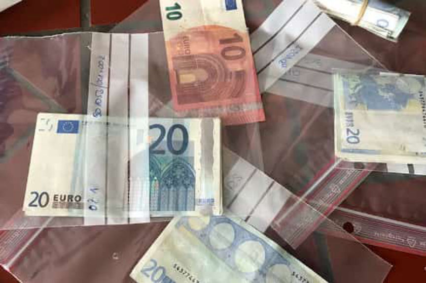
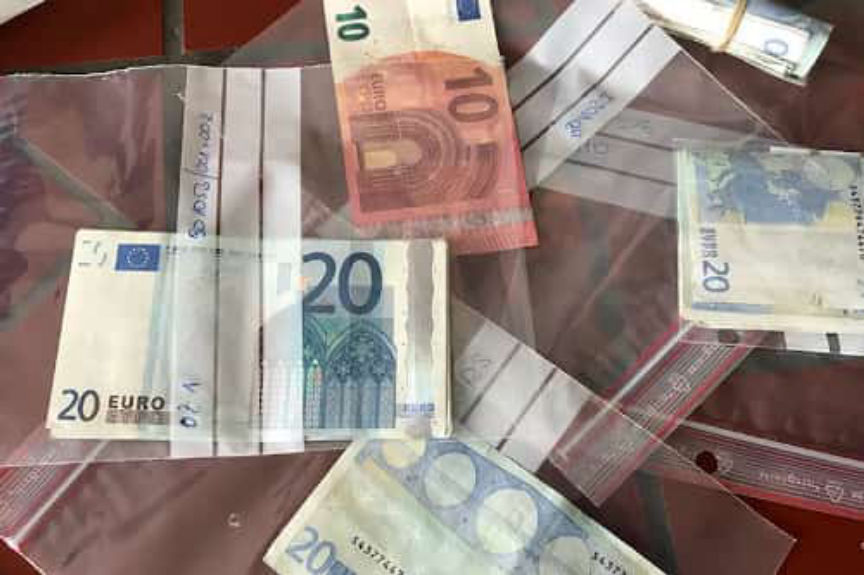

Austrian Teen Avoids Prison in Counterfeit Euro Case
~2 min read | Published on 2019-11-20, tagged Counterfeits, General-News, Sentenced using 430 words.
A 19-year-old Austrian man was handed a suspended sentence after he admitted that he had purchased counterfeit euros on the dark web. The teen reportedly wanted to use the counterfeit bills to purchase drugs.
“Accessing the dark web is general knowledge,” the teenager told the judge during sentencing. The judge questioned how the 19-year-old had learned the skills required to access onion services.
The sentencing hearing against the teen took place in the Krems an der Donau Regional Court in the federal state of Lower Austria. According to the teen’s confession, his drug use problem escalated in early 2018 as he was going through a personal crisis. The teen reportedly became depressed and had himself admitted into a psychiatry hospital. The drugs he was prescribed to while in the psychiatry reportedly fueled his addiction to drugs.
With time the teen’s drug addiction became expensive and he was forced to look for a cheaper way of paying for the drugs. The teen, as a result, decided to turn to the dark web from where he believed he could acquire counterfeit euros at a small cost. He told the court that he found a Dutch counterfeit notes’ vendor on an undisclosed dark web marketplace. The vendor reportedly agreed to ship 10 counterfeit 50-euro bills to the teen for 100 euros.
The teen placed the order and waited for the counterfeit notes to arrive. As he was waiting, his package was intercepted and seized by postal inspectors in the Vienna distribution center. On seeing that the first package did not arrive the teen placed another order. The second package was also not delivered. Both packages were forwarded to the cops who in turn initiated an investigation that led to the teen’s arrest.
Asked by the judge how he had accessed the dark web marketplace the teen explained step by step how he had used a VPN to conceal his IP address and the Tor browser to access the darknet. When asked how he had acquired the IT skills required to access the dark web, the teen told the judge that the process of “accessing the dark web is general knowledge.”
The teen then told the court that he regretted his actions and that he was happy the counterfeit notes were not delivered to his place. He also disclosed that he had stopped using drugs and had started a mechanic’s apprenticeship.
At the end of the hearing, the Judge sentenced the teen to six months in prison suspended for 3 years. The judge also ordered the teen to pay a fine of 720 euros.
“Accessing the dark web is general knowledge,” the teenager told the judge during sentencing. The judge questioned how the 19-year-old had learned the skills required to access onion services.
The sentencing hearing against the teen took place in the Krems an der Donau Regional Court in the federal state of Lower Austria. According to the teen’s confession, his drug use problem escalated in early 2018 as he was going through a personal crisis. The teen reportedly became depressed and had himself admitted into a psychiatry hospital. The drugs he was prescribed to while in the psychiatry reportedly fueled his addiction to drugs.
Counterfeit Euro Notes in Plastic Bags | salzburg.orf.at
With time the teen’s drug addiction became expensive and he was forced to look for a cheaper way of paying for the drugs. The teen, as a result, decided to turn to the dark web from where he believed he could acquire counterfeit euros at a small cost. He told the court that he found a Dutch counterfeit notes’ vendor on an undisclosed dark web marketplace. The vendor reportedly agreed to ship 10 counterfeit 50-euro bills to the teen for 100 euros.
The teen placed the order and waited for the counterfeit notes to arrive. As he was waiting, his package was intercepted and seized by postal inspectors in the Vienna distribution center. On seeing that the first package did not arrive the teen placed another order. The second package was also not delivered. Both packages were forwarded to the cops who in turn initiated an investigation that led to the teen’s arrest.
Asked by the judge how he had accessed the dark web marketplace the teen explained step by step how he had used a VPN to conceal his IP address and the Tor browser to access the darknet. When asked how he had acquired the IT skills required to access the dark web, the teen told the judge that the process of “accessing the dark web is general knowledge.”
The teen then told the court that he regretted his actions and that he was happy the counterfeit notes were not delivered to his place. He also disclosed that he had stopped using drugs and had started a mechanic’s apprenticeship.
At the end of the hearing, the Judge sentenced the teen to six months in prison suspended for 3 years. The judge also ordered the teen to pay a fine of 720 euros.